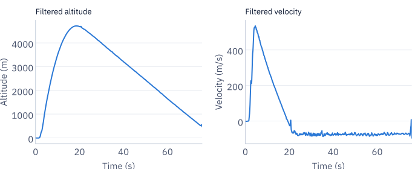
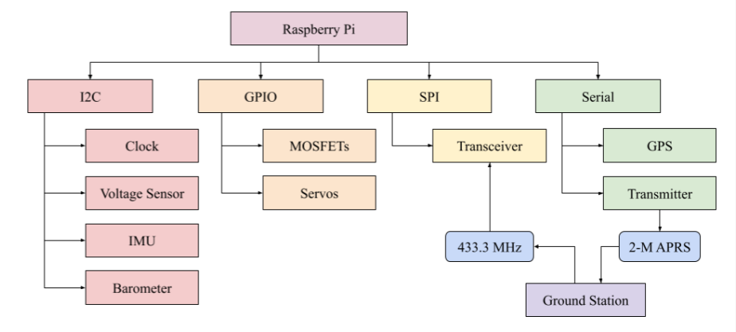
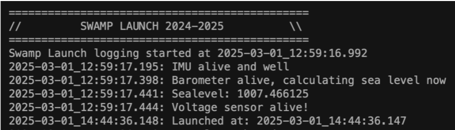
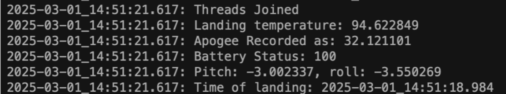
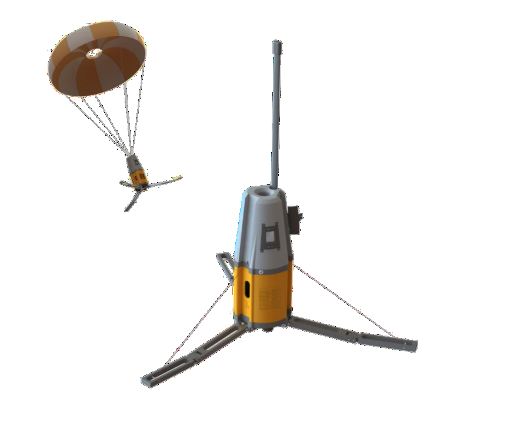
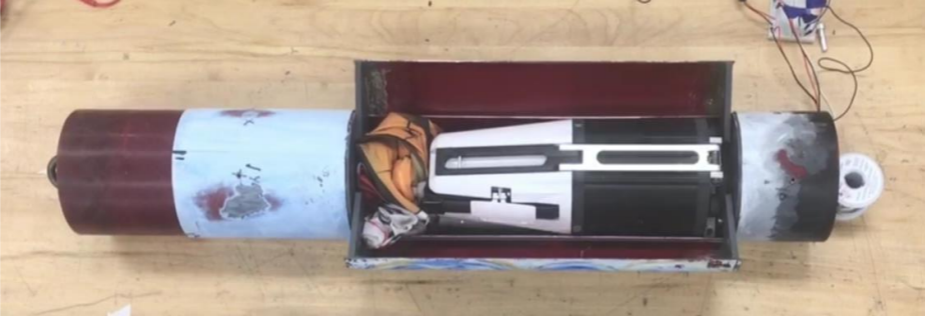
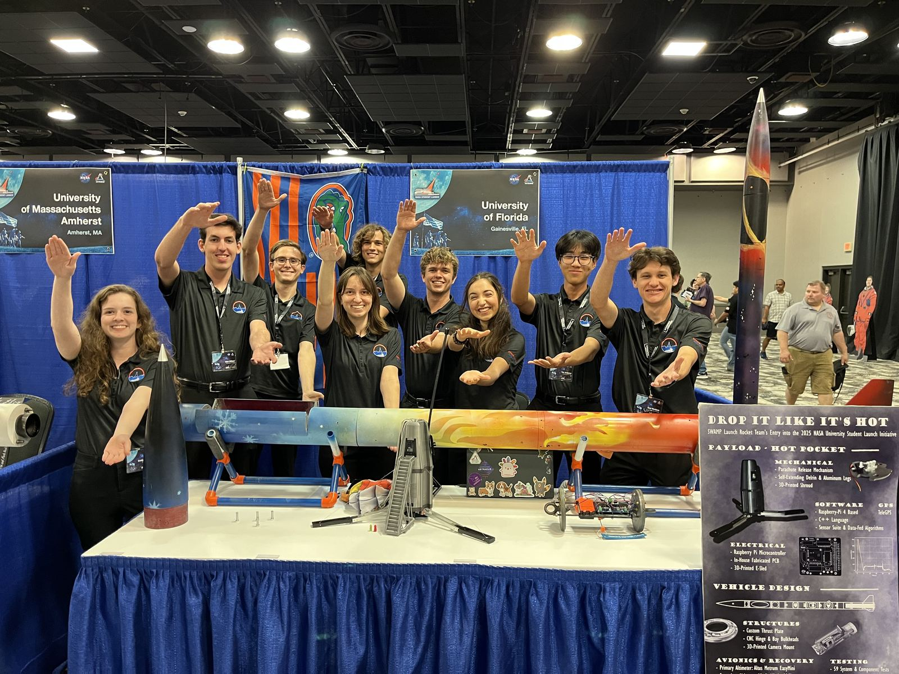

Payload flight software for Project Communigator
Payload flight and recovery software for NASA USLI: flight computer, sensor fusion, and telemetry transmission.
- Role
- Payload software lead (15-member sub-team)
- Team
- Swamp Launch Rocket Team, University of Florida
- Supervisor
- Dr. Sean R. Niemi
- Period
- Fall 2024 to Spring 2025
- Result
- Apogee Award and 6th place overall at the 2025 NASA Student Launch competition
- Tools
- C++, I2C, SPI, multithreading, Kalman filter

Overview
Develop an embedded flight computer for a NASA USLI payload (HOT Pocket) that logs seven data points (apogee, max velocity, landing velocity, peak G, landing temperature, GPS, and capsule orientation) and transmits them after landing. The mission: detect liftoff and log flight data, receive radio command to release the payload via servo retention system during descent, land payload separately under parachute ahead of the rocket, and transmit final telemetry over a 2M band radio.
Approach
- Retention system. GPIO-controlled MOSFET for servo latch that holds crew capsule during powered flight, ejects on radio command during descent.
- Launch detection and data collection. I2C/SPI drivers for IMU, barometric sensor with calibration registers, voltage monitor, LoRa receiver. Launch detection requires sustained acceleration/altitude across multiple samples to avoid false positives.
- Sensor fusion. 2-state Kalman filter smoothing barometric altitude. The background threads compute filtered position, velocity, and G-forces; live crew survival percentage computed continuously.
- Landing detection. Dual-sensor logic uses barometer (altitude stable near ground) and IMU (1G, motionless) to confirm landing. Then deploy antenna servo for transmission.
- Telemetry transmission. Packs seven data points into an APRS package; transmits over LoRa 2M radio with 5 minutes acknowledgment listen-back.
Figures











